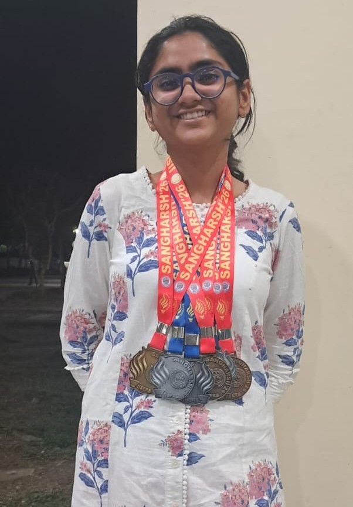
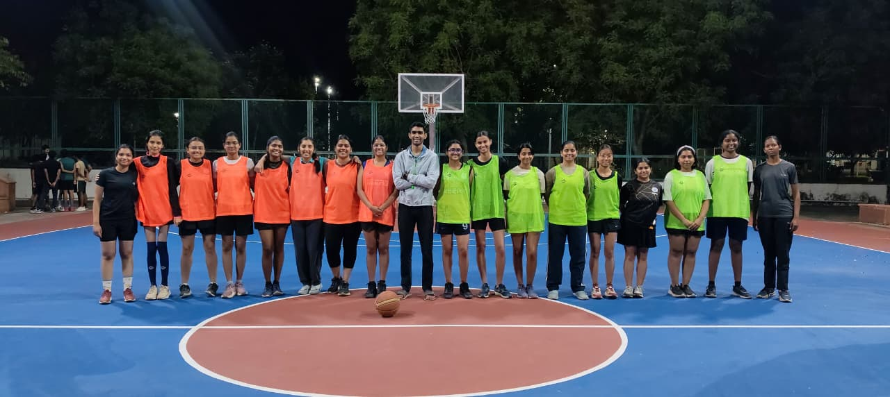
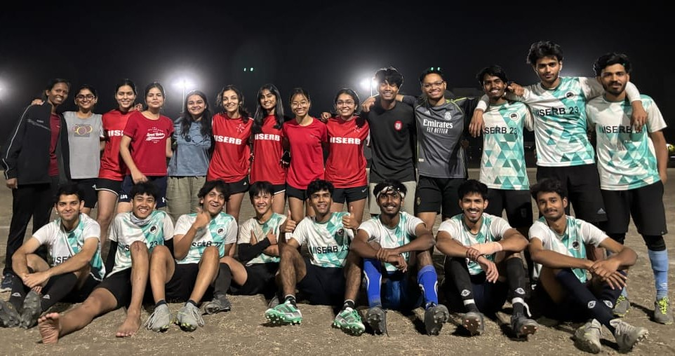
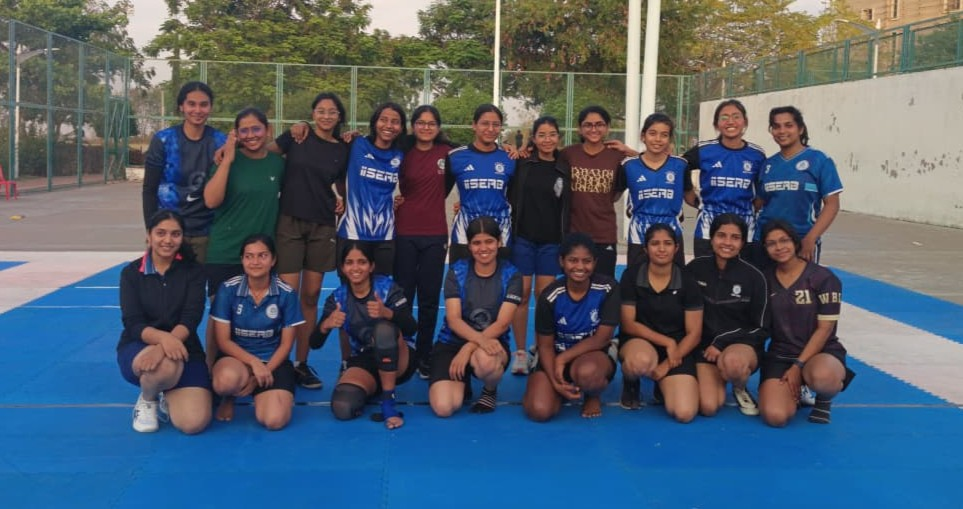

From the happenings of Intra-IISERB Sports Tournament...

Let me share (some portions of) the nectar that Sangharsh, or any tournament in general, carries for an athlete. What we don’t advertise quite so loudly is the losing, that is as integral to sport as winning. I had also participated in the 2024 and 2025 editions of Sangharsh, and I didn't win a single sport (hence basketball). Does that mean no fun?
Absolutely not! Some of my best memories came from there, like the scrappy team huddles before matches we had no business winning. This year too we rounded up our batch team for Women’s Basketball, and a genuinely spirited lot they were.
Turns out we couldn't claw our way past the round robin. As the last quarter ended, I felt that duh! despite all the effort, the one sport I wanted most slipped through fingers once again. But then I found my way back to what captaincy really is to me. I love pondering about team dynamics, appreciating the unique strengths of every player, and supporting people in a way that makes them feel valued and productive. And I'm not gonna hang up my basketball shoes anyway.


